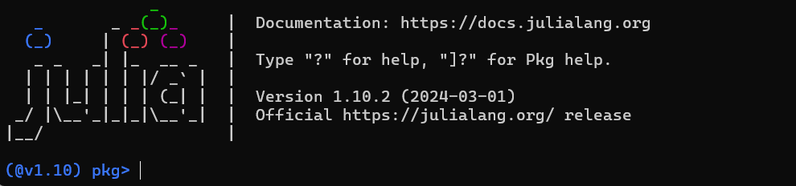

Installation Guide
Before installing Herb.jl, ensure that you have a running Julia distribution installed (Julia version 1.7 and above were tested). Check below for a more detailed Julia How-To.
Thanks to Julia's package management, installing Herb.jl is very straightforward. Activate the default Julia REPL using
juliaor from within one of your projects using
julia --project=.From the Julia REPL run
]
add Herbor instead running
import Pkg
Pkg.add("Herb")which will both install all dependencies automatically.
For later convenience we can also add the respective dependencies to our project, so that we do not have to write Herb.HerbGrammar every time.
] add HerbConstraints HerbCore HerbSpecification HerbInterpret HerbGrammar HerbSearchAnd just like this you are done! Welcome to Herb.jl!
Julia How-To
1. Install Julia
First, we need to install Julia before we proceed. Head over the Julia downloads page and follow the instructions.
Linux & MacOS
Have a look at the installation page for your distribution or simply paste this into a terminal.
curl -fsSL https://install.julialang.org | shWindows
Put this command in Powershell.
winget install julia -s msstoreIf winget is not installed install it by checking this link (https://phoenixnap.com/kb/install-winget)
Check Julia installation
Open a command prompt/terminal and run julia.
You should see something similar to this:

You will see the start-up message above, including the version number. At the time of writing, this is 1.10.2. You will likely see the latest stable release, listed on the Julia organization's website.
Julia REPL
What you see right now on the screen is called the Julia REPL (Read–Eval–Print Loop). This is similar to ghci from Haskell and similar to node's REPL too.
Let's try some simple things. Only type the part after julia> without the comment (the part after #)
julia> x = 2 # creates a variable called x with value 2
2 # prints the results
julia> print("hello","julia")
hellojulia
julia> for x in 1:10 # for loop in julia
println(x)
end # notice how we have to specify end here..
1
2
3
4
5
6
7
8
9
10
Now that julia hopefully works, let's clone the repositories. To exit julia use Ctrl+D or simply type exit().
Typing ? opens a help menu for what the REPL can do.
help?>
search: ] [ = $ ; ( @ { " ) ? . } ⊽ ⊼ ⊻ ⊋ ⊊ ⊉ ⊈ ⊇ ⊆ ≥ ≤ ≢ ≡ ≠ ≉ ≈ ∪ ∩ ∜ ∛ √ ∘ ∌ ∋ ∉ ∈ ℯ π ÷ ~ | ^ \ > < : / - + * ' & % ! && if :: as
Welcome to Julia 1.10.2. The full manual is available at
https://docs.julialang.org
as well as many great tutorials and learning resources:
https://julialang.org/learning/
For help on a specific function or macro, type `?` followed by its name, e.g. ?cos, or ?@time, and press enter. Type ; to enter shell
mode, ] to enter package mode.
To exit the interactive session, type CTRL-D (press the control key together with the d key), or type exit(). <- Useful in case you forget how to exit :)2. Clone and install projects - for development
Usually, in Julia one would create a script file (something like file.jl) and write his code there. However, Herb consists of packages that other people can use. Think about pip packages or npm packages.
Thus, the setup will be a bit different from what you see in other programming languages.
- First navigate to the home folder of your operating system. On Linux, this is just
cd ~. On Windows opencmdand typecd %userprofile%(This will navigate toC:/Users/your_username). Alternatively, if usingPowerShellsimply typecd ~. - type
cd .juliato navigate the folder where Julia keeps the installation things - type
juliato enter the JULIA REPL. From here we will be able to also install the repositories - type
]to enter the "Package Mode" of Julia. From here, we can install packages and tasks related to dependency management. After typing]theREPLshould now look like this

Notice that the ${\color{blue}blue}$ color on the left. This indicates that we are in the "Package Mode" shell where we do not write code but run commands to manage dependencies or install packages.
- To see what can we do from here,
?is again helpful. Try to read through the output just to get an idea of what options are available. - Type
dev HerbSearchSince we want to clone a package for local development we will use thedevordevelopcommand. This will clone the package from Github and store the repository in the~/.julia/devfolder. - After a lot of packages are installed, you can run
st(short for status) to see thatHerbSearchwas successfully installed.
The output should look similar to this:

- Exit the terminal (Ctrl+D) and check that a new folder
devappeared usingls(Linux) ordir(Windows) - Navigate to that folder
cd dev. This is the folder where theHerbSearchpackage was cloned and where we are going to develop our code. If we need to modify the code from other published packages such asHerbDatawe would have todevthe package locally to change it (e.g.dev HerbData)
3. Setup IDE (VSCode)
Hopefully, everything has gone smoothly so far üòÖ. Let's set up our IDE to start coding.
Unfortunately, there is no nice JetBrains IDE for Julia like IntelliJ, PyCharm, etc. There is a VSCode extension that is actively developed that works quite well. However, it is sometimes unstable and might crash from time to time (especially if you are on Windows). This is the extension that we will use.
If you do not want to use VSCode and want to use vim üòâ check this link.
1. Open VsCode
Assuming vs-code is installed on the system and that you have your terminal still open in the ~/.julia/dev folder you can simply type
$ code . To open the folder in VSCode.
2. Install Julia extension
Open the extension tab either by clicking or by using the keyboard shortcut (Ctrl+Shift+X) and search for julia and install the first extension. 
3. Run some example code
Create a new file in folder src and give it a name (e.g., getting_started.jl) with .jl as the suffix. Paste the following example code
# add all imports
using HerbSearch, HerbSpecification, HerbInterpret, HerbGrammar
# define our very simple context-free grammar
# Can add and multiply an input variable x or the integers 1,2.
g = @cfgrammar begin
Number = |(1:2)
Number = x
Number = Number + Number
Number = Number * Number
end
# create a problem with 5 examples by using the function f(x) = 2x + 1
problem = Problem([IOExample(Dict(:x => x), 2x+1) for x ∈ 1:5])
iterator = BFSIterator(g, :Number, max_depth=5)
# the solution found is a program from the arithmetic grammar above that will pass all examples
solution, flag = synth(problem, iterator)
program = rulenode2expr(solution, g) # should yield 2*6 +1
println("Found program is: ", program)
println("This program should be equiavalent to the function 2x + 1")
# here we can evaluate our program on with input x = 6
input = 6
output = execute_on_input(SymbolTable(g), program, Dict(:x => input)) To run either click on the Run button in the top right side of the screen and choose Julia: Execute Active file in REPL or press ALT+Enter This will create a window that will spawn the Julia REPL and evaluate the code.
This will not work because by default VSCode chooses the Julia environment 1.10 to run the code (Think about python virtualenv). We want to run the code in the environment of HerbSearch. To do that we need to tell VSCode to switch to the right environment.
Open the command palette by typing Ctrl+Shift+P and type change environment 
Now Pick a folder -> HerbSearch
Try again to run the code and it should work now.